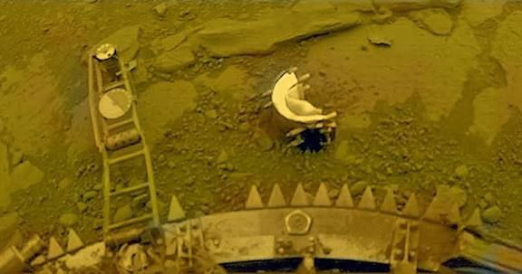
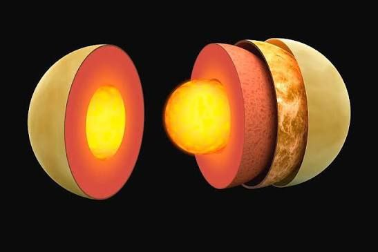

Venus
Earth’s twin; hottest planet.

အရွယ်အစား
12,104 km
တစ်နေ့ကြာချိန်
5,832 h
အပူချိန်
≈ 465 °C
လများ
0 Moon
Venus သည် Solar System ထဲတွင် Sun မှ ဒုတိယမြောက်အနီးဆုံးရှိသော ဂြိုလ်ဖြစ်သည်။ အရွယ်အစားနှင့် အလေးချိန်အရ Earth နှင့် ဆင်တူသောကြောင့် “Earth’s twin” ဟုခေါ်ကြသည်။ Venus တွင် ကာဗွန်ဒိုင်အောက်ဆိုဒ် (CO₂) များစွာပါဝင်သော ထူထဲသော လေထုရှိပြီး မိုးတိမ်များသည် sulfuric acid ဖြင့် ဖွဲ့စည်းထားသည်။ ထိုထူထဲသော လေထုကြောင့် အပူကို ဖမ်းထားပြီး greenhouse effect ဖြစ်ပေါ်စေသည်။ ထို့ကြောင့် Venus ၏ မျက်နှာပြင်အပူချိန်သည် 465°C ခန့်ထိ ပူနိုင်ပြီး Solar System ထဲတွင် အပူဆုံးဂြိုလ် ဖြစ်လာသည်။ Venus သည် Sun ကို တစ်ပတ်လည် လှည့်ပတ်ရန် 225 ရက်ခန့် ကြာသည်။ ထူးခြားချက်တစ်ခုမှာ Venus သည် ဂြိုလ်အများစုနှင့် မတူဘဲ ပြောင်းပြန်ဘက်သို့ လှည့်ပတ်သည် (retrograde rotation) ဖြစ်သည်။ Venus တွင် ဂြိုလ်တု (moon) မရှိသကဲ့သို့ ring များလည်း မရှိပါ။ အာကာသမှ ကြည့်လျှင် Venus သည် အလွန်တောက်ပသောကြောင့် မနက်ခင်းတွင် “Morning Star” သို့မဟုတ် ညနေခင်းတွင် “Evening Star” ဟုလည်း ခေါ်ကြသည်။

Surface Details
Internal Structureထူးခြားချက်များ
Earth အရွယ်အစားနှင့် ဆင်တူသော “Earth’s twin” အပူဆုံးဂြိုလ် (surface ~465°C) အလွန်ထူသော လေထုနှင့် sulfuric acid မိုးတိမ်များ